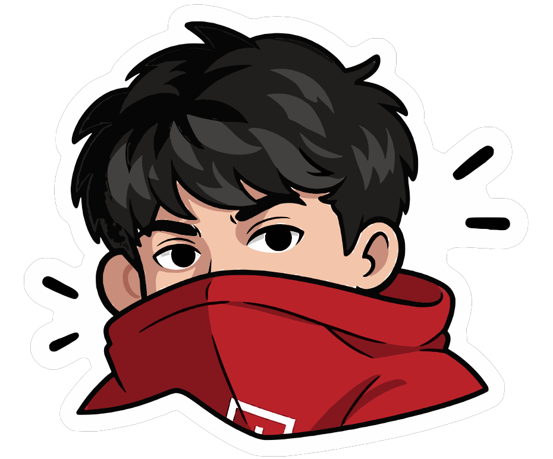
Senior product designer with 5+ years. I find the real problem, untangle the chaos and make the process work
Terminal showcase for Alfa-Bank acquiring
ended a 2-year standoffhyper-real 3D
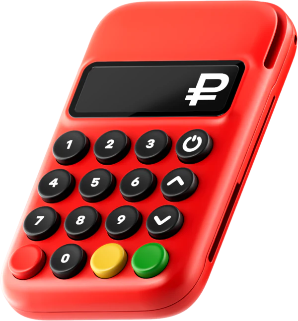
Turns out 30% of sales leads were support calls
Alfa-Bankrolling out now
A new tariff calculator, tested inside the real page in two days
AI prototype+13.7% CR1 in A/B
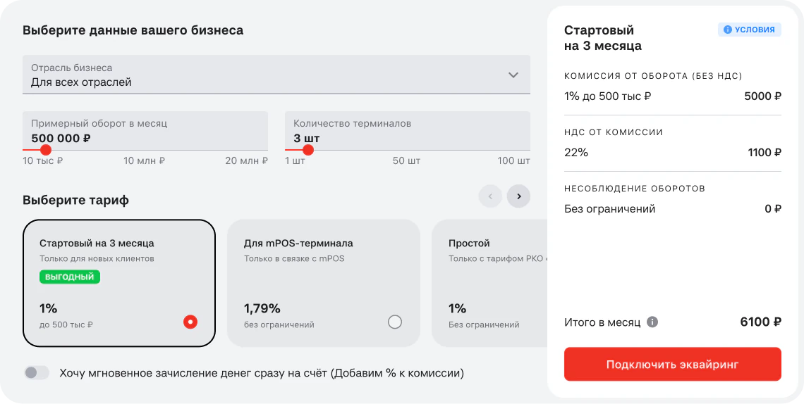
One plugin, built solo, now the whole website design team runs on it
30+ designersAI
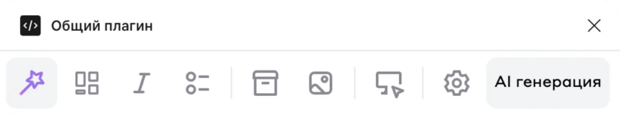
Paying for public transport with a QR code
−20 s per payment+17% in app
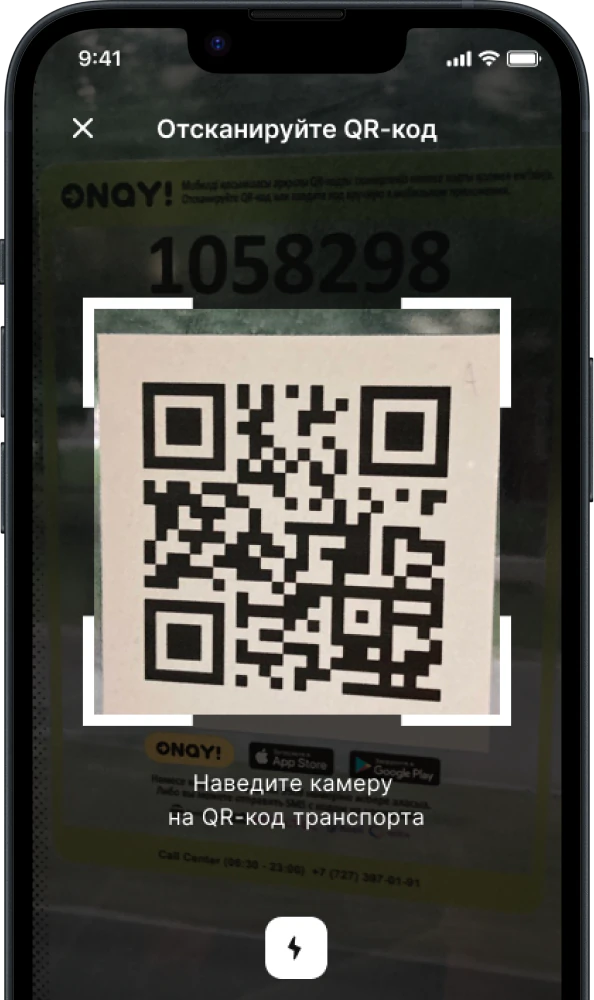
Off the clock I travel, dance lezginka, and fall down history rabbit holes
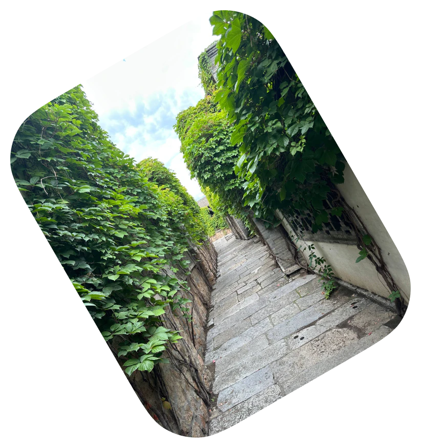
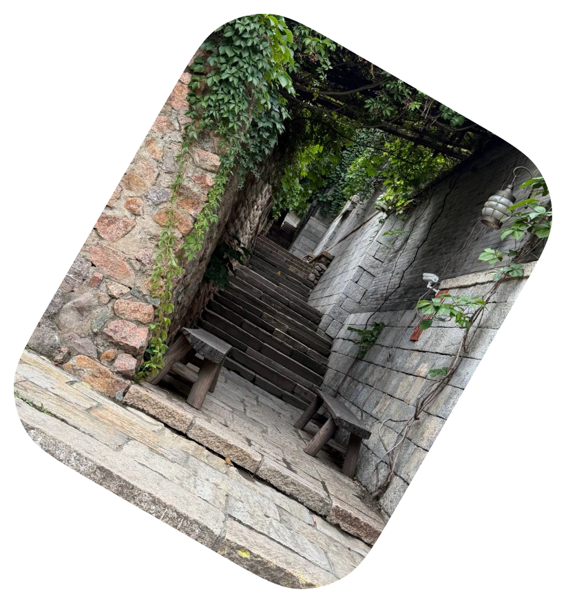
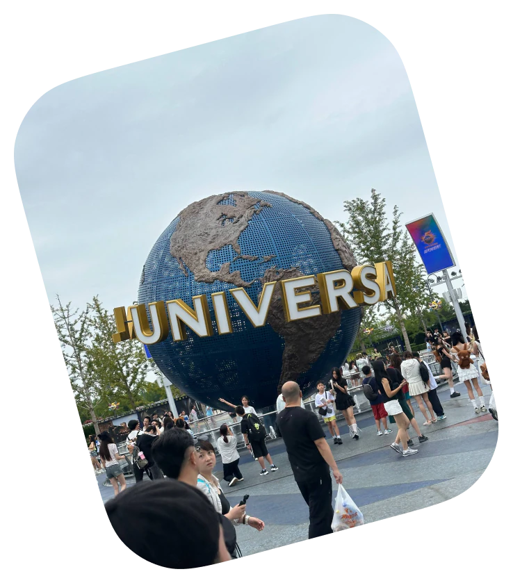
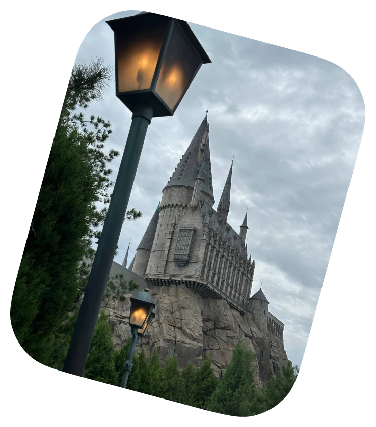
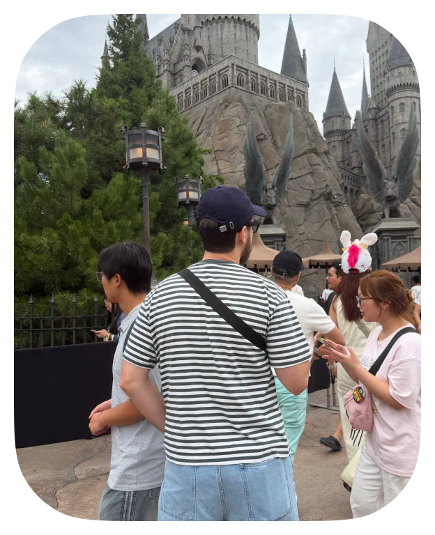
I build side projects on the regular. Most ideas are weird, some break, I keep what sticks
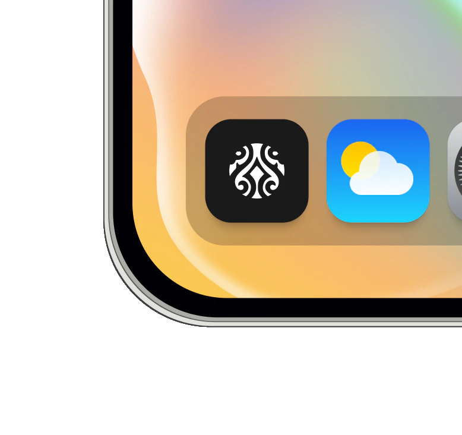
iesTelegram mini app for learning Chechen
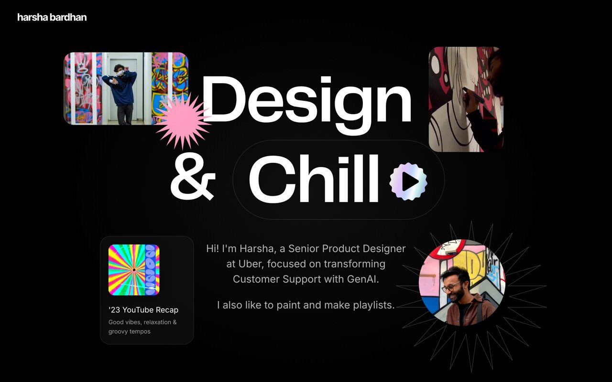

obratkahonest feedback on your designs, no fluff
time travela mini-game: hover to time travel and crack the hardest problems of each era
tippya little macOS AI buddy that
explains things while you work
explains things while you work
Every now and then I make quick concepts, mostly to stay sharp and try styles I’d never get to use at work
I also talk design out loud: meetups, podcasts, and building in public on Telegram and YouTube
Figma
Master Plugin
Master Plugin
Figma Master Plugin — combining all plugins into a unified system
Продуктовый
хахаос
хахаос
Why the user is wrong: the biggest mistakes in UX research — Продуктовый хахаос
Whiteboard
challenge
challenge
Design Whiteboard Challenge — short and to the point

Job hunting as a UX/UI and product designer in 2024 — what really matters

UX research for junior UX/UI designers, product designers and researchers

Product approach, metrics for metrics’ sake and measuring design system success

UX/UI designer portfolio, CV and interviews — what hiring teams look for
What it’s like working with me, straight from the PMs, devs, and designers I’ve shipped with
my DMs are open, let’s make something good